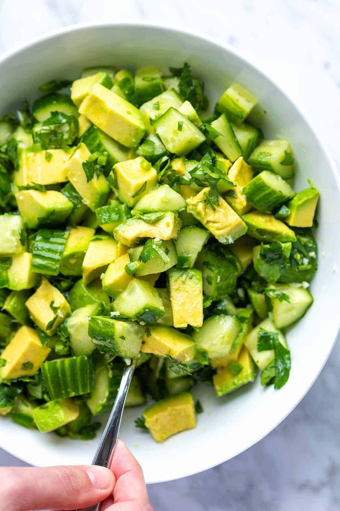

I love this avocado salad with crunchy cucumbers so much that I could eat it every day.
It’s incredibly easy to make and can be enjoyed in multiple ways: as a standalone dish,
as a delightful side, as a flavorful chunky salsa, or even as a delicious topping for
larger salads.
Ingredients
- 2 medium Hass avocados, about 2 cups cubed
- 2 cups (300 grams) cubed cucumber, about 1 large cucumber
- 3 tablespoons fresh lime juice, from 1 to 2 limes
- 2 tablespoons extra-virgin olive oil
- 1 jalapeno, seeds and membrane removed
- 1 small garlic clove, omit if sensitive to raw garlic, about 1/2 teaspoon
- 1/4 teaspoon fine sea salt, or more to taste
- 1/2 cup (25 grams) chopped fresh herbs like cilantro, parsley, basil, dill or a
combination
- Hot sauce, optional
Steps
-
In the bottom of a salad bowl, whisk together the lime juice, olive oil, minced
garlic, diced jalapeno, and salt until well combined. Stir in the fresh herbs.
If you’re preparing the salad in advance, you can cover and refrigerate it for up
to one day.
-
When you’re ready to serve the salad, cut the avocados in half, remove the pits,
and then cut them into cubes.
-
Add the cubed avocado and sliced cucumber to the salad bowl with the dressing.
Gently toss the avocado and cucumber around the bowl to ensure they are evenly
coated in the dressing.
-
Take a taste and adjust the seasoning as needed, adding additional salt if desired.
If you like some heat, add your favorite hot sauce as an optional extra.